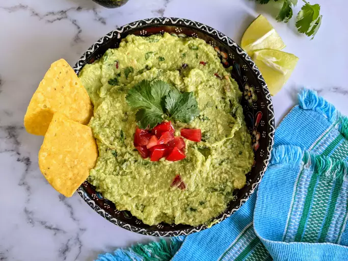

Guacamole

Description
Restaurant-worthy guacamole is just a few ingredients away. You'll be surprised how easy it is to make this top-rated guacamole recipe. You'll come back to it again and again!
Ingredients
- Avocados: Of course, you'll need avocados!
- 1 Lime
- 1.tsp Salt
- 1/2 cup diced Onion
- 2 Roma Tomatoes
- 3 tbsp Cilantro
- 1tsp minced garlic
- 1 pinch ground pepper
Cooking Directions
- Mash avocados, lime juice, and salt together in a medium bowl; mix in tomatoes, onion, cilantro, and garlic. Stir in cayenne pepper.
-
Serve immediately, or cover and refrigerate for 1 hour for improved flavor.
Home